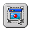
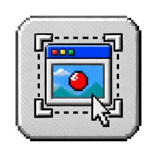

Window, screen or area
Hover to pick a window, click a display, or drag any rectangle with live W × H and resize handles. Window recordings follow the window when it moves. Optional 3-2-1 countdown and click highlights.

Tinycap
Tinycap lives in your menu bar. Record a window, a screen or an area and export MP4, WebM or GIF — or take a screenshot and mark it up with arrows, text and pixelation. Sized for pull requests, bug reports and chat.
Version 0.3.0 · 5.8 MB · macOS 15 Sequoia or later · Apple Silicon and Intel
Signed and notarized by Apple. Updates itself. Free and open source (MIT).
Hover to pick a window, click a display, or drag any rectangle with live W × H and resize handles. Window recordings follow the window when it moves. Optional 3-2-1 countdown and click highlights.
When you stop, a preview opens. Drag the trim handles, or press I and O at the playhead. No re-recording a clip because the start was slow.
MP4 as H.264 or HEVC, WebM as VP9, or GIF with presets. Pick quality and size; the frame timing of your recording is kept.
Tinycap encodes a short sample of your clip to estimate the file size. For GIF, “Fit under 10 MB” steps the settings down until it fits.
Its own encoder stores only what changed between frames, keeps one palette so colors don’t flicker, and merges frames where nothing moved.
No Dock icon, no window until you need one. Global shortcuts you can change, and the menu-bar timer stops the recording with one click.
No accounts, no uploads, no telemetry. The app is sandboxed; its only network request is a daily update check, which you can turn off. Files go to your Movies folder.
Built with Swift, SwiftUI and ScreenCaptureKit. A 5.8 MB download that records straight to disk with hardware encoding.
Screenshot an area, a window or a screen from the same menu, or press ⌃⌥⌘4. A thumbnail waits in the corner: click it to edit, drag it into any app, or leave it and it's saved.
Drag to draw, hold Shift to snap to 45°, and pull the middle handle to curve it.
Bold labels in six colors or any you pick, with an optional solid background.
Hide keys and names. The export replaces those pixels, so nothing can be recovered from the file.
Crop to what matters, then ⌘C, ⌘S or drag out. PNG or JPEG at 2× or 1×, with no location or device data.
Click the menu-bar icon, or press a shortcut, and pick Window, Screen or Area.
The icon turns into a timer. Click it, or press ⌃⌥⌘. to stop.
The preview plays your clip. Cut the start and end.
Pick MP4, WebM or GIF, check the size, export. Copy it, show it in Finder, or drag it straight into Slack or GitHub.
Global shortcuts work from any app, so the menu never shows up in your recording or screenshot. Change them in Settings.
| Screenshot Area | ⌃⌥⌘4 |
|---|---|
| Record Area | ⌃⌥⌘A |
| Record Window | ⌃⌥⌘W |
| Record Screen | ⌃⌥⌘S |
| Stop Recording | ⌃⌥⌘. |
Tinycap is MIT licensed. WebM export uses libvpx and libwebm from the WebM Project, built from pinned source, and the direct download updates itself with Sparkle. Found a bug? Report a Bug in the menu opens an issue with your versions filled in. Pull requests are welcome.
git clone https://github.com/soleo/tinycap
cd tinycap
scripts/build-app.sh
open build/Tinycap.appFree. On first launch, macOS asks you to allow Screen Recording — Tinycap walks you through it. After that it checks for updates once a day and lets you know quietly.
Download Tinycap 0.3.0